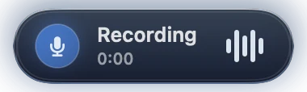
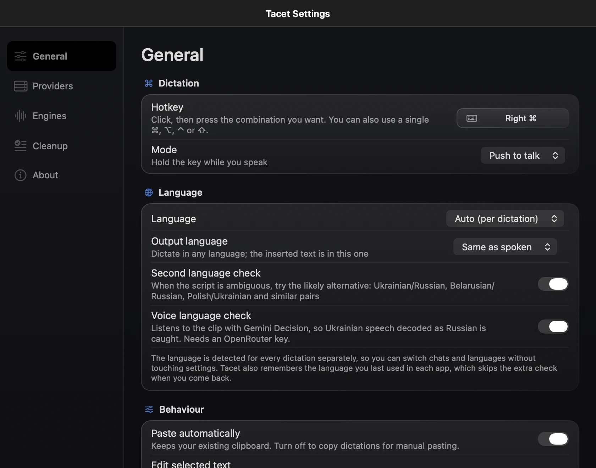

Menu bar dictation for macOS
Voice in. Text out.
Hold a shortcut and speak into the app you’re already using. Tacet detects your language and can translate into the one you choose.
macOS 14+ · Apple Silicon and Intel · Apple-notarized

Надішлю підсумок завтра.
From voice to a sentence
See the recording indicator, automatic language detection and an example of optional translation.



A small app for everyday writing
The menu bar keeps Tacet one shortcut away while you stay in your editor, document or chat.
Switch languages mid-day
Let Tacet detect the language for each dictation or lock it to a language you choose.
Speak one language. Type another.
Choose an output language and connect a text provider. Tacet can insert the translation into the same app.
Choose where speech is recognized
Download Parakeet for recognition on your Mac or configure a cloud provider. Optional cloud features send data to the provider you choose.
Keep your clipboard
Tacet restores your clipboard after automatic insertion and keeps transcripts in History.
Put Tacet in your menu bar
Open the disk image for your Mac, drag Tacet into Applications and give it microphone access. Enable Accessibility for automatic insertion.
arm64.dmgx86_64.dmg